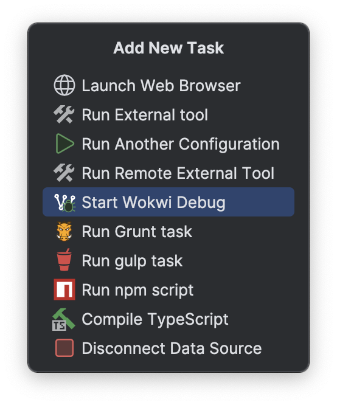
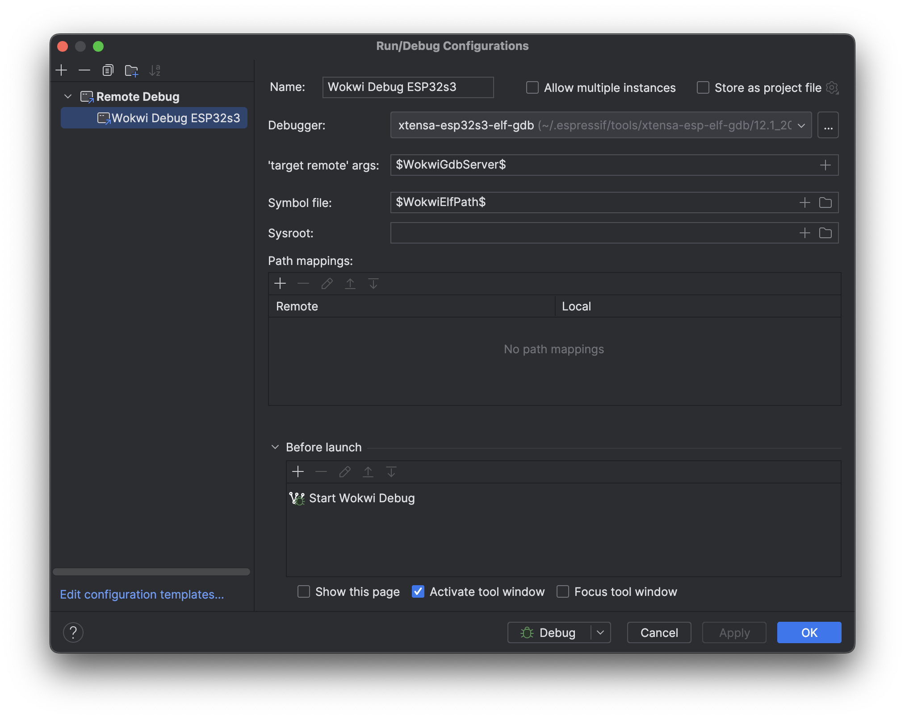

For the Debugger set the GDB executable that targets the desired platform.
E.g. the xtensa-esp32s3-elf-gdb executable is suitable to debug esp32s3 target programs.
For the 'target remote' args, input $WokwiGdbServer$ into the field.
Or, click the ＋ icon and choose the WokwiGdbServer macro. This action auto-fills the correct GDB server address from the wokwi.toml.
In the Symbol file field, enter $WokwiElfPath$ or choose it from the macro list by clicking on the ＋ icon.
This configures the debug symbol file path to match the ELF path specified in the wokwi.toml.
In the Before launch task list, click on the ＋ icon and select the Start Wokwi Debug task from the list.

Click Apply to save the configuration. When running this configuration, Wokwi will initiate in debug mode, launch a GDB server and wait for a client to connect. Subsequently, the debugging client starts and connects to the GDB server, which then begins the program execution.

Limitations
Due to the Remote Debug configuration being exclusive to CLion, debugging Wokwi simulations in other IDEs like IntelliJ or RustRover is currently not feasible. Nonetheless, it's expected that RustRover will implement a similar configuration after its Early Access Program (EAP) concludes.